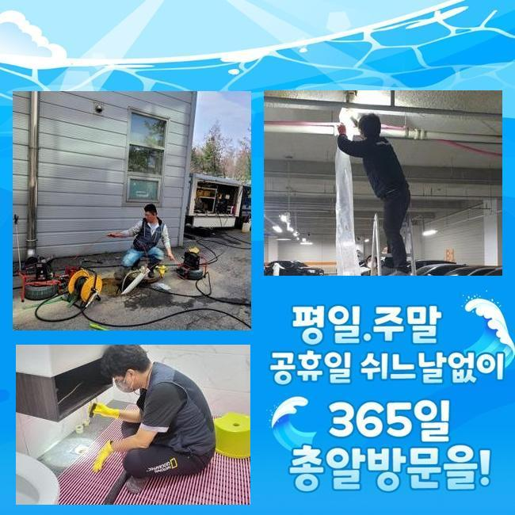
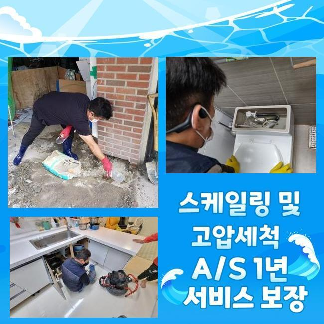
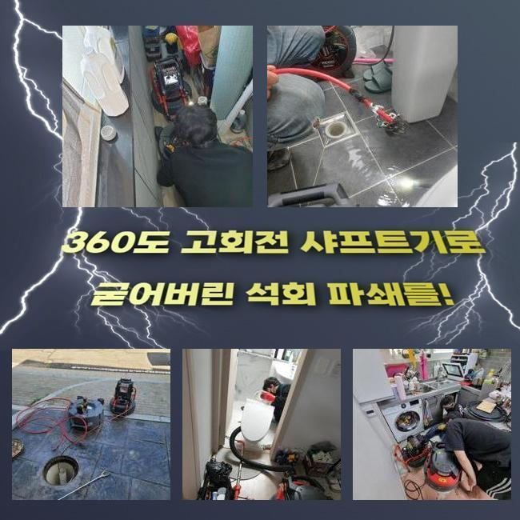
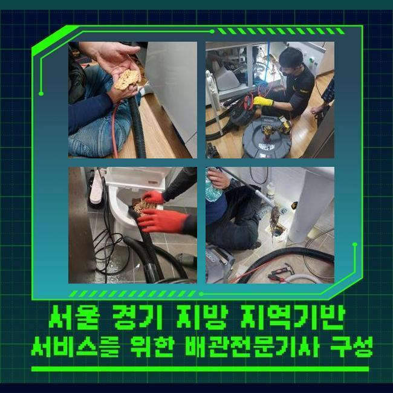
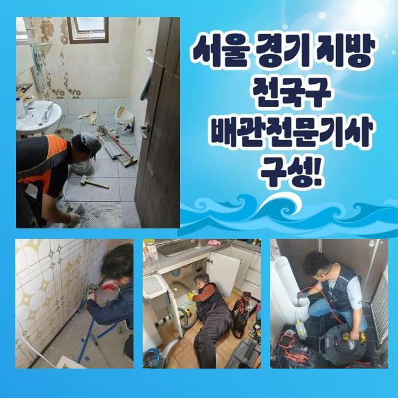
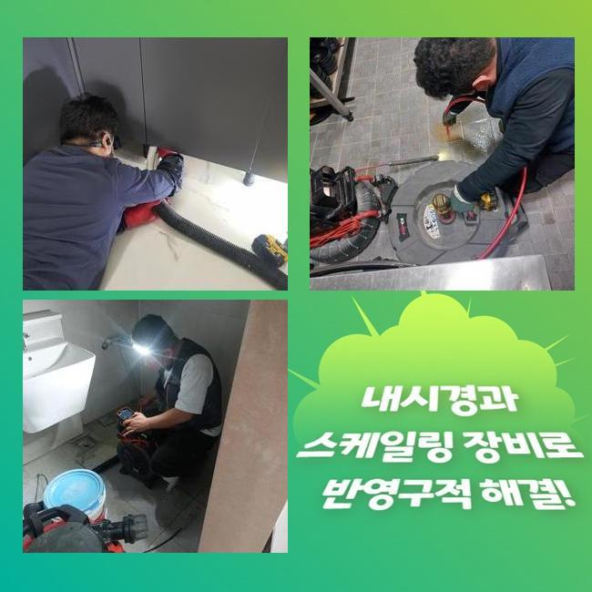

🏠 금천구 가산동세탁실막힘 시흥동 하수구뚫는비용 설비출장
시흥 싱크대막힘 전문 시공 후기

📋 작업 개요
- 위치: 시흥
- 서비스 유형: 싱크대막힘, 하수구막힘, 배관막힘, 맨홀막힘, 뚫는업체, 배관청소
- 작업 일시: 2025. 5. 21. 16:15
- 업체명: 하수구수사대 (010-5615-2118)
🔍 문제 상황
금천구 가산동세탁실막힘 시흥동 하수구뚫는비용 설비출장
주방에서 조리공간이 막히게되면 사용 자체에 애로사항을 감내해야하죠
식당에서 이러한 문제들이 발생되면 운영측면에도 부정적 영향들을 주는데요
그러므로 안정적이고 신속한 대응이 필요한데요
음식점에서 주방라인에서 배수정체가 나타났죠
주위의 요식업소에도 물빠짐이 이뤄지지않는 증세들이 목격되었어요
이런 증상은 메인배수관에 원인들이 자리했을 여지를 생각해야 합니다
그러므로 공유관로를 이용하는 맨홀등의 진단도 진행시켜야했던 상황이였죠
도착한 후 먼저 주방 주방쪽이 막혀버린것을 보게되었어요

🔎 원인 분석
💡 전문가 진단: 정밀 진단 장비를 사용하여 슬러지의 고착 여부를 판명하고 타격/세척 작업을 실시했습니다.
작업 과정에서문에 통수가 불가한 상태였고 시공이 필요했죠
배수관의 증상들은 수많은 기조로 나타나는데 그 가운데 상당수의 이유는 하수관이 오래되거나 기름들이 쌓이게되어 발생합니다
이러한 배수 정체는 위생 관련한 사항에도 대대적인 영향력들을 미치기에 이것을 막고자 해결책들을 꾀했어요
내시경카메라를 관로안으로 투입시키며 그 양상을 파악해보니 구간마다 잔해물들이 자리하고 있던것을 인지했죠
내시경기기는 육안으로는 안보이는 하수도를 확인하는 기기로서 렌즈부분이 장착된 선을 하수관으로 투입해 송출화면으로 가시적으로 보여주는 장비이죠
진단 결과 이물들이 빠져나가지를 못하여 고인 상태였어요
관로가 노후되거나 구조와 관련된 문제로 보이지는 않았고 배수관으로 빠져나가던 식자재의 잔해가 쌓이는 바람에 통수자체를 방해하는게 이유로 보였어요
씽크대배수로가 외부쪽이 연결된 상태로 자리하고 있어서 주방에서 발생된 이물들이 외측까지 악영향들을 미친 상태였습니다
그 까닭을 파악하고 즉각 배수관을 조치할 생각으로 청소를 이행했는데요
작업 과정에서 이용한건 플렉스 샤프트라는 기계로 이 기기는 내측에서 회전하게되며 흡착물을 제거하는 효자 기기입니다

🔧 작업 과정
샤프트기계를 사용한다면 씽크대부분이 막히게 되었을 때 흡착물을 제거해내고 또한 표면을 보호하면서 안전히 작업해줄 수 있어요
샤프트의 사슬들을 투입시켜 이물이 있는 위치에 접근한 다음 체인들로 흡착물을 청소해보았어요
다양한 잔재가 샤프트장치에 엉킨모습으로 배출됐는데요
제거된 잔해물들을 주시해보니 예상한것과 같이 개수대에서 흐르게된 식자재들과 기름성분이 대부분이였어요
수많은 현장 경험으로 미루어볼때 식재료들이 많은 양이였는데 가열된 제거된 뿌리의 잔해로서 싱크볼에서 빠지면서 물이 안빠지게 만드는 요소로 자리잡았습니다
뿌리들은 녹지 못하여 배수 길목에 정체되어 막히게만듭니다
음식폐기물과 기름뭉치도 어마어마하게 배출됐는데 조리공간에서 사용하는 기름성분들이 배수관으로 배출되며 중간중간에 흡착된거죠
기름물질들은 관로에서 시간이 지나며 단단해지며 벽측에 붙어버리며 다른 식자재들과 혼합되어 빠른속도로 정체를 자아냅니다
기름의경우엔 지속적으로 굳게되어 간소한 방법으로 청소하기 힘든 경우들이 다수입니다
샤프트기기를 삽입하여서 청소해주고 석션장치를 써서 잔존하는 고착물들을 배출시켜 빈틈없이 마무리했습니다
단단해진 기름덩어리들과 탈락된 찌꺼기들까지 폐기한 후 배수관을 내시경장치로 점검하고 오염도를 관찰할 수 있었습니다
증세의 경우 멈추게되었고 밖의 배관의 솟아오르는 증세도 말끔하게 사그라들었습니다
작업들이 일단락되고 고객께 주방 이용시 관리적측면의 도움될만한 사안들도 일러드렸죠
사용을 하실 때 하수관에 잔재들을 걸러주지않고 버리지않는게 중요하게 작용한다고 안내했는데요
더 나아가 단단한 음식물들이나 기름물질들은 하수구 막힘의 통수를 불가케하는 주범이 되는 까닭에 평상 시 잔여물질들을 하수구로 배출하기 이전에 따로 폐기해야한다고 고지해드렸습니다
기름의경우 점성이 높고 내부표면에서 흡착되어버려서 사용한 기름들은 휴지등으로 닦고서 버려주시는게 권장하고 있는 방식이에요


✅ 작업 완료
예상에 없던 배수정체를 예방해주실 땐 정기적으로 배수관을 청소해주고 필요할 경우 클리너들을 사용하는게 이점으로 작용한다는것도 안내했죠
고객분은 저희의 설명을 듣고서 신경써서 관리측면을 꼼꼼하게 하실것을 말씀하셨죠
하수구 오류들은 방임적 태도로 일관하면 이전과 달리 심각해져서 미리 조속히 대응해주는게 여러모로 도움이됩니다
작업이 순조롭게 진행되어 고객의 고민을 타파하여 다행스럽게 생각하였고 갑작스러운 배수정체를 막기위하여 지속적인 점검들과 동반해야할 것을 재차 강조드려요



⚠️ 주방 싱크대 배관 막힘 예방 수칙
- ✅ 기름기가 묻은 식기나 프라이팬은 설거지 전 키친타올로 반드시 기름때를 닦아내세요.
- ✅ 주기적으로 싱크대 개수대에 뜨거운 물을 가득 받아 한 번에 내려 배관 내부 기름을 씻어내세요.
- ✅ 배수구 거름망을 미세한 필터로 사용하시고 음식물 찌꺼기가 틈으로 새어 들지 않게 관리하세요.
- ✅ 베이킹소다와 식초를 뜨거운 물과 함께 일주일에 한 번씩 부어주면 배관 살균과 막힘 예방에 좋습니다.
💡 핵심 정리
- 확실한 장비 작업(내시경 점검 및 샤프트 스케일링)으로 원인을 뿌리 뽑습니다.
- 작업 후 1년 이내에 동일한 부위 재발 시 100% 무상 A/S 서비스를 보장합니다.
- 서울 · 경기 · 인천 전 지역에 24시간 언제든 긴급 출동할 수 있도록 항시 대기 중입니다.
❓ 자주 묻는 질문 (FAQ)
🚨 시흥 싱크대막힘 문제로 고민이신가요?
정확한 원인 진단과 확실한 시공으로 재발 없는 해결을 약속드립니다.
24시간 긴급 출동 | 서울 · 경기 · 인천 전지역 | 1년 내 재발 시 무상 A/S